Winter has its pleasures, true, but most of us tend to get our fill of frosty crunch and hearty hearths before the year’s first month is spent. Then comes the waiting, the yearning for greener seasons. By any measure other than the calendar, dreary February is our longest month, not our shortest, and March seems to plod, not march, to the vernal equinox.
Little wonder, then, that when spring finally does come around, its hallmark heralds - sweet, cleansing rains and blooms bursting with newborn color - bring joy to our souls. But April’s showers and May’s flowers are only the tip of the no-more-snow-and-ice berg: Here are a few other certain signs that - ah, at last! - nature’s new year really has begun.
Unless you live in the frozen Far North, you are probably not far from a red-winged blackbird, one of the most common and widespread birds in the continental United States and Canada. In fall and winter they travel with other blackbirds in huge raucous flocks, raiding farm fields and grain lots in dark, swirling clouds (though they also consume hordes of harmful insects).
But in early spring the male red-wings form bachelor flocks and shift from feeding grounds to breeding grounds, most often marshes and brushy meadows. Each male stakes out a territory of about a quarter of an acre by striking a pose that is a sure announcement of the season - and a clear warning to other males to steer clear. Riding atop a swaying bough or cattail, he spreads his wings, flashes his bright-red shoulder patches, and repeatedly sings out: conkaREEEEE!
Unlike the showy spring displays of males from many other species, the red-winged’s is all about claiming turf rather than seducing a mate. In fact, a mate is the last thing a male desires. Red-winged blackbirds are among the minuscule 2 percent of all bird species that are polygynous: males mate with multiple females during the same breeding season.
When the females arrive a week or two later, they won’t be looking for guys with flashy shoulders - studies have shown that’s not what impresses them. Instead, they’re lured by prime property with good cover and a plentiful food supply for supporting young. Such places attract many females, so the males who’ve conka-REEEE’d the richest territories end up with the largest harems.
In most places the aptly named mourning cloak butterfly holds the honor of being the first of its kind to appear in spring. It overwinters as an adult and appears, dark-winged and somber as winter itself, as early as March, even in northern states. The return of truly warm weather, however, is heralded more jubilantly a few weeks later by the sky-blue flutterings of dainty, delicately spotted spring azures, the first butterflies of the season to emerge, transformed, from a long winter’s pupal sleep inside hard-shelled chrysalises.
Spring azures are the most common members of a large family known generally as blues. The spring azure itself, it turns out, may be its own little clan - entomologists think the “species,” which varies considerably in such details as wing-scale configurations and color intensities, will ultimately prove to be several similar but biologically distinct species.
Be that as it may, for most it’s enough to know that these delightful little butterflies are among the season’s first “flying flowers,” adding color to the landscape well before most actual wildflowers are in bloom. Look for spring azures flitting about milkweed, wild carrot, clover and dogwood, or gathering by the dozens to sip at mud puddles. Consider, as you watch, the insects’ remarkable lives: Last year, as tiny leaf-eating larvae, they were tended to by ants for the sweet honeydew the larvae produced. Then, for months of suspended animation, they survived winter’s icy blasts.
Now, given wings and warm sun at last, the butterflies will mate and die within a week or so, their adult lives nearly as fleeting as spring’s showers - and to winter-weary humans, every bit as refreshing.
The notion that every beginning commences with an ending certainly holds true for spring. For gardeners, the last frost is the very definition of the growing season’s start. Every early planting is a calculated gamble - will the dreaded “final frost” come late this year, sending seedlings to an icy premature demise? Fickle weather makes the gamble all the more a roll of dice. Cold weather alone is not necessarily the enemy - nor, for that matter, is frost itself.
Meteorologically speaking, “black” or “killing” frost - the sort that destroys plant tissues and dashes dreams of early harvests - isn’t frost at all, but a freeze. The moisture in plants freezes, expands and bursts cell walls. For this to happen, conditions must be just right (or, from a human perspective, exactly wrong): clear skies, no wind, low humidity, temperatures near or below freezing. On such nights, do what you can to protect your seedlings, and hope temperatures don’t drop more than a few degrees below the 32 mark.
Real frost, on the other hand, is simply the frigid-weather equivalent of dew. On some nights, when the temperature dips just a tad below freezing and the air is sufficiently moist, the extra water vapor collects as ice crystals on the ground and on the surfaces of plants and objects. In the process, heat is released. Plants are actually protected by a true, external frost.
Scientists call this direct conversion of vaporous water to solid crystals (or vice-versa) sublimation. Call it what you will, the results sparkling in young spring’s early morning sun certainly are sublime. Frost-glazed fernlike patterns trace unseen scratches on windows; fresh leaves and grass glisten with icy lace; daffodil and crocus flowers stand bejeweled in delicate (and harmless) crystalline coats. Hardly to be dreaded, these final frosts make the new season all the more beautiful.
Pity the poor dandelion - a legitimate spring wildflower that most blaspheme as a weed. Somewhere along the line the sprightly perennial gained a reputation as a sign of a neglected lawn; ever since it has been the target of chemical companies and blade-wielding, flame-throwing homeowners.
But beauty is indeed in the eye of the beholder, and for some, at least, the appearance of the season’s first bright yellow dandelions is a joy. Consider poet James Russell Lowell’s view: “Dear common flower that grow’st beside the way,” he wrote, “fringing the dusty road with harmless gold, first pledge of blithesome May.”
If the plant’s aesthetics escape you, perhaps you’ll find something to admire in its sheer botanical pluck. The name dandelion is an English spin on the original French, dent de lion, “tooth of lion,” referring to the plant’s broad, fanged leaves, which spread horizontally around the base, maximizing surface area for photosynthesis. Beneath the ground, a tough, deep root system anchors the plant; cut it at the crown, and at least two side crowns will soon emerge as reinforcements.
Now look closely at the bloom: The flower of a dandelion is actually a cluster of many little flowers - each yellow spike is capable of producing a seed. In spring, the blossoms open near the ground, but as the seeds mature the dandelion puts on a final growth spurt, raising each fluffy seed head above the grass, where its paratrooper seeds can freely catch the wind.
Some point to the plant’s tasty and nutritious spring leaves and wine-worthy blossoms as its most redeeming features; wise gardeners point out that the dandelion’s pollen is an important source of early-spring sustenance for ladybugs and other beneficial insects. Me? I welcome the much-maligned wildflowers for a slightly different reason. Dandelions often mingle with other lawn-loving wildflowers, including their less leafy look-alike, coltsfoot, and early spring’s purple and pale lavender violets. The result is a combination of color too lovely to mow right away - an excuse I’m happy to accept as the dandelion’s spring gift to me.
Of the roughly 10,000 different kinds of mushrooms in the United States and Canada, none are as fervently sought after as morels, woodland delicacies that in most regions show themselves in spring for only about three weeks. Even in those parts of the West and Northwest where they can be abundant and sizeable, morels are so prized that local police sometimes patrol prime picking territories to keep the peace. And in much of the East, where their presence can be scattered and unpredictable, morels are nothing less than the Holy Grail among mushroomers. The truth is, in many places you’re more likely to find other morel seekers scattered throughout the woods than you are the mushrooms themselves.
But the pursuit is worth it. Whether simply sautéed in butter, fried in batter or served more elaborately in a cream sauce, morels have a rich, woodsy flavor unlike any other. Close cousins to truffles, morels don’t have gills like most mushrooms, but instead produce their spores in tiny sacs, each called an ascus. The mushrooms are hollow and have a pale stem topped by a fleshy, conical head with distinct irregular ridges and deep pits. Picture a pinecone-shaped bath sponge on a stout stick, and you’ll get the rough idea. Their only look-alikes are false morels, many of which are inedible or toxic to some degree. False morels have smooth or merely wrinkled heads, and are not pitted.
Most experts say to start looking for morels when the oak leaves in your region are the size of a squirrel’s ears. The morning after a warm spring rain is an especially good time, and prime spots are the bases of old or dead trees, as well as disturbed soil and burnt-over sites. Small, black morels seem to favor proximity to evergreens, aspens and birches, while the larger yellow morels and white morels tend to grow in old orchards and meadows and near poplars, oaks, elms, beeches and maples.
On early spring days, painted turtles newly emerged from hibernation rest on pond-side rocks or logs, basking in the season’s renewing sun. At dusk, if you’re lucky and keep your presence hidden, you may witness their curious and graceful courtship ballet.
Swimming smoothly in open water just below the surface, their red-orange bordered shells shining, a male and female glide toward one another. Meeting, with their heads barely above water, they arc their long yellow-streaked necks and touch, nose tip to nose tip. Holding the position, with legs motionless, they slowly sink together, almost to the bottom. There they separate, the larger female backing off for a distance, seemingly swimming away, then circling back to the male. As she nears him, they rise again to the surface, stretch their necks, and again touch nose to nose. Then they descend … and the dance repeats, over and over, a measured rhythm of rising and falling, breaking apart and circling together, until, on some unseen cue, one of their des cents takes them all the way to the bottom, where they mate.
Three weeks to a month later the female will scoop out a depression in nearby soil, lay as many as two dozen eggs, and bury them 1 to 3 inches deep. Fledgling painted turtles about the size of your thumbnail will nibble through their eggshells two and a half to three and a half months later. In warmer regions, the little turtles may emerge from the nest in early fall to seek out their own muddy pond-bottom shelters for the winter. But in cold areas, the nestlings will stay right where they are. They’ll spend their first winter hibernating in their natal chamber, thinly protected by frozen ground from marauding skunks and raccoons, until the following spring, another turn of an ancient cycle.
|
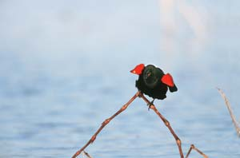 RICHARD DAY/DAYBREAK IMAGERY Red-winged blackbirds are one of the most common and widespread birds in the United States and Canada. Each spring, the males stake out breeding territories and defend them from other males by flashing their bright-red shoulder patches and repeatedly singing out conkaREEEEE! |
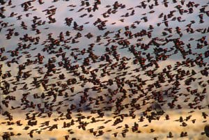 TOMVEZO.COM In fall and winter, red-winged blackbirds travel in huge flocks, raiding farm fields and grain lots in dark, swirling clouds (though they also consume hordes of harmful insects). |
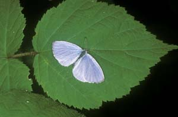 BUREK/ANIMALS ANIMALS Spring azure butterflies are the first butterflies to emerge, transformed, from a long winter’s pupal sleep in hard-shelled chrysalises. |
|
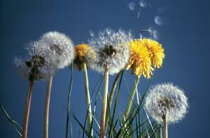 DEGGINGER/ANIMALS ANIMALS Pity the poor dandelion - a legitimate spring wildflower that most blaspheme as a weed. |
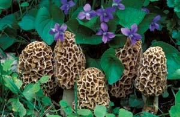 DAVID CAVAGNARO No mushrooms are as fervently sought after as morels, woodland delicacies that in most regions show themselves in spring for only about three weeks. |
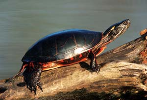 RICHARD DAY/DAYBREAK IMAGERY On early spring days, painted turtles newly emerged from hibernation rest on pond-side rocks or logs, basking in the season’s renewing sun. |
|
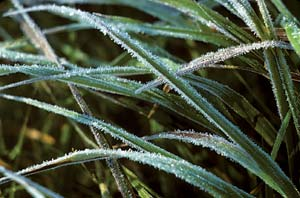 DWIGHT KUHN Hardly to be dreaded, true final frosts make the new season all the more beautiful. |
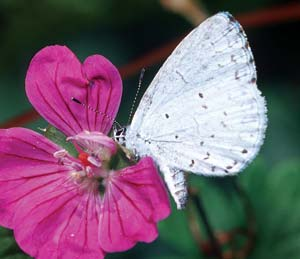 RICHARD DAY/DAYBREAK IMAGERY Spring azure butterflies are just one of nature’s most colorful signals that spring has sprung. |
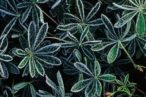 MICHAEL DURHAM A true spring frost protects plants, as opposed to a freeze, which causes cell walls to expand and burst. |
|
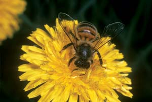 DONALD SPECKER/ANIMALS ANIMALS Don’t hate dandelions - these wildflowers feed bugs beneficial to gardens. |
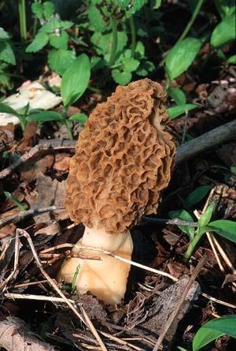 RICHARD DAY/DAYBREAK IMAGERY Look for morel mushrooms after warm rains, especially at the bases of old trees. |
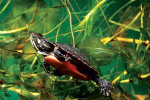 DWIGHT KUHN This baby painted turtle will grow up to engage in one of nature’s most graceful courtship rituals. |